One avocado a week linked to 16% lower CVD and 21% lower CHD over 30 years
Harvard cohort data from about 110,000 people found weekly avocado eaters had lower cardiovascular and coronary heart disease risk than rare or non-eaters.
201 posts (134 primarily about this topic) · 62 reposts and set-aside posts not shown
Harvard cohort data from about 110,000 people found weekly avocado eaters had lower cardiovascular and coronary heart disease risk than rare or non-eaters.

Louis says slow-cooked steel-cut oats are among the heart-healthiest foods and rejects influencer claims that oats are 'the same as eating sugar'. The shared post summarizes a small RCT in 19 healthy adults where oat beta-glucan blunted glucose and insulin responses and carried over to the next meal. About 3/4 to 1 cup of oats supplies ~4 g beta-glucan.

Louis summarizes the COSMOS randomized trial of 500 mg/day cocoa flavanols (and multivitamin) in over 21,000 adults for 3.6 years. Total cardiovascular events fell 10%, which was not statistically significant, but CVD death fell a significant 27% and major CV events were also significantly reduced. Adherence-adjusted analyses showed 15% fewer total events and 39% fewer CVD deaths; authors urge cautious interpretation.
Louis shares a Substack about a 2004 pomegranate study, calling the author eccentric but saying pomegranate polyphenols look promising. He proposes telomerase activation as a mechanism and notes larger trials were never done.

A small randomized, double-blind trial using CT angiography found aged garlic extract reduced low-attenuation soft plaque in coronary arteries of patients with diabetes.
Reposting a summary of the COSMOS trial at Harvard/Brigham: more than 21,000 adults took 500 mg cocoa flavanols daily, a multivitamin, both or neither. Total CV events fell 10% (not significant), but CV death fell a significant 27%, with larger effects (15% total events, 39% for CV death-type outcome) among adherent participants.

Louis describes a PREDIMED sub-study comparing a control diet, Mediterranean plus EVOO, and Mediterranean plus nuts. Only the nut group showed carotid intima-media thickness regression after about 2.4 years, consistent with a lower stroke rate and 30% fewer MACE.

Louis shares a UCSF crossover study in men with heart disease where high-flavonoid cocoa improved flow-mediated dilation and increased circulating angiogenic cells. He links this to the COSMOS cocoa-extract trial, in which cardiovascular death fell 27%.

Louis cites the Harvard COSMOS randomized trial, in which high-dose flavonols from cocoa reduced cardiovascular death by 27% over 3.6 years, and suggests a wide variety of polyphenols is sensible. The shared chart lists polyphenol-rich foods, with chokeberry and cocoa powder highest.
Louis shares CNN coverage of Harvard Nurses' Health Study results. Women who drank one to three cups of caffeinated coffee daily in their 50s were more likely to reach older age free of major chronic disease with good cognitive, physical and mental health.
Louis rejects Esselstyn's claim that nuts harm people with CVD. The Ornish program now permits limited nuts and seeds, citing cohorts such as the Adventist and Iowa Women's studies and trials showing 30-50% lower cardiovascular risk.

Louis shares a Bredesen post on urolithin A de-aging immune T cells and adds that it is a mild mitochondrial toxin like statins and metformin, creating hormetic stress that activates defense pathways. It is brief and largely a mechanistic opinion with a news link.

Louis highlights that no drug has been shown to cut both total and cancer mortality by about 40% in healthy people within 5 years, yet this was seen with nuts in PREDIMED. He stresses the caveat that it was a post-hoc observational analysis of an RCT.
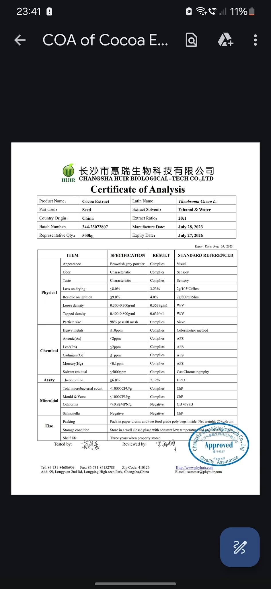
Louis shares a UK user's comparison of a bulk cacao extract (20:1) with CocoaVia's CocoaPro (24:1). The poster calculates that 1.5 g should provide about 500 mg cocoa flavanols, though the supplier does not test flavanol or epicatechin content directly. It is a consumer tip rather than evidence.
Louis reports observational analyses within PREDIMED. Those on a Mediterranean diet plus nuts >3 times weekly had markedly lower total, CV and cancer mortality, though not proof of causality.
Louis shares a 2026 randomized crossover trial in healthy adults in which daily tomato intake improved cognitive performance and modulated functional brain networks. Media coverage describes modest gains in attention and memory after three months of tomato paste. The trial is small.

Louis shares a Clinical Nutrition study in which a daily 60 g serving of skin-roasted peanuts improved global brain blood flow by about 4% in older adults, roughly the decline seen over 10 years of aging. He suggests arginine-driven nitric oxide as the mechanism, and nuts as slow-release arginine that may also help heart health.
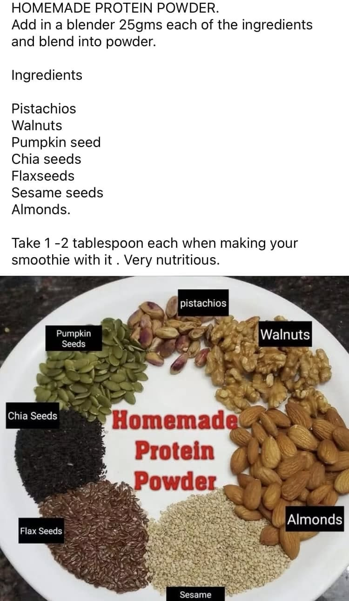
Louis suggests nuts and seeds instead of protein powders, since their fat and fiber are cardioprotective, improve insulin sensitivity and are filling. He points to research showing protective effects of nuts and seeds against CVD.

Louis argues the Dirty Dozen is built on flawed methodology (EWG weights all pesticides equally and ignores EPA safety thresholds). Decades of Harvard cohort data on conventionally grown produce show benefit, and a shared Barbell Medicine video says most exposures sit roughly a million times below safe reference doses.

Louis says he aims for a cup of beans a day, in line with Blue Zone diets, and describes simple-ingredient pre-cooked bean packets (olive oil as only fat, about $2.75 each) he found at Walmart. It is a personal product tip with no cited research.
The post notes that Dean Ornish's reversal program dropped its ultra-low-fat stance to allow limited nuts and seeds. Quoted evidence includes cohort studies (30-50% lower CVD), PREDIMED (n = 7216; nut group halved stroke) and meta-analyses showing lower LDL, total cholesterol and triglycerides.

Louis shares a NutritionFacts summary that daily black cumin improved cholesterol, triglycerides, blood pressure and blood sugar across meta-analyses of RCTs. In one trial, postmenopausal women taking 1 g/day lowered LDL by 27% in two months, which rebounded after stopping.

Louis shares a NutritionFacts note that blood antioxidant power rises within an hour of drinking hibiscus tea, possibly explaining its strong blood pressure effect, and asks whether a concentrated supplement exists. It is mostly a question with thin context.
Louis shares Adventist Health Study results showing pesco-vegetarian diets had the lowest mortality: 18% lower versus non-vegetarians, 15% for lacto-ovo-vegetarians and 3% for vegans. He notes similar patterns in the Harvard cohorts.

Louis shares a twin-study (observational) from King's College London linking blood theobromine to biologically younger DNA methylation and telomere profiles in 1,600+ people from TwinsUK and KORA. He suggests it may partly explain the roughly 30% CVD mortality reduction in the COSMOS cocoa trial; the researchers caution against eating chocolate as a longevity shortcut.
A link to a news item on an Oregon State University study in which a daily almond snack improved key health markers in people with metabolic syndrome. No commentary or numbers were added.
A review of pomegranate juice and cardiovascular disease credits its polyphenols (ellagitannins, punicalagins, anthocyanins). It cites a study where juice for up to a year reduced carotid intima-media thickness by up to 35% in carotid stenosis patients while controls rose 10%, and a meta-analysis of 8 RCTs showing lower blood pressure.

Coffee's diterpenes cafestol and kahweol raise LDL. In a 24-week randomized trial of 46 healthy adults drinking about 0.9 L/day, French-press coffee raised LDL about 0.26 mmol/L (~10 mg/dL) more than paper-filtered coffee. French press, boiled, Turkish, moka and espresso keep more diterpenes; paper filters remove most.
Louis lists cohorts, including the Adventist Health Study showing 48% lower fatal CHD with nuts >4 times weekly, and the Nurses' Health Study.
Summary of a presentation by Shirin Hooshmand: in postmenopausal women with osteopenia, eating prunes with calcium and vitamin D preserved bone density better than supplements alone, and a larger Penn State study found similar results. Prunes may also help men aged 50-79.

Summarizes natto as a food rich in spermidine, vitamin K2 and nattokinase. It cites a Frontiers clinical study where high-dose nattokinase slowed carotid plaque progression, an association with lower all-cause mortality, and mouse lifespan data for spermidine.
Louis shares Harvard analysis of nearly 200,000 people in the Nurses' Health Studies and Health Professionals Follow-up Study. Dark chocolate was associated with lower diabetes risk, while milk chocolate was linked to weight gain and no benefit. He advises low-sugar dark chocolate with cocoa butter rather than milk fat.

Louis shares claims that coffee diterpenes (kahweol, cafestol) activate PPAR-gamma in hepatic stellate cells, breaking down scar tissue. His note links PPAR-gamma activation to coffee's apparent benefits for insulin resistance and diabetes.

A Maastricht randomized crossover trial of 31 adults aged 60-75 found 60 g of peanuts daily for 16 weeks raised cerebral blood flow 3.6%, verbal memory 5.8%, and lowered systolic BP 5 mmHg.
Medical Xpress reports that daily cocoa extract supplementation lowered hsCRP, a key inflammation marker, in older adults in the COSMOS randomized trial. Louis notes this anti-inflammatory effect may partly explain the reduction in cardiovascular mortality seen in the trial.

Louis shares a post countering fear of oats, noting a Levels glucose-monitor analysis found a mild-to-moderate spike after a bowl of oats and that beta-glucan fiber stabilizes blood sugar. He adds the spike is even lower with slow-cook steel-cut oats.

The poster rejects claims that pistachios, almonds, cashews, pumpkin seeds and similar foods are harmful because of a high omega-6:omega-3 ratio. He says these foods are associated with lower heart disease and diabetes risk (possibly excepting very high coconut intake) and the ratio is useless for predicting risk.

NutritionFacts reports older adults taking a tablespoon of unprocessed cocoa daily for 12 weeks improved muscle mass index, grip strength and four physical function tests.
Louis summarizes the Adventist Health Study-2 cohort, where all participants eat a relatively healthy diet, allowing head-to-head comparison of healthy patterns. Pesco-vegetarians had 18% lower all-cause mortality than non-vegetarians, beating lacto-ovo vegetarians and vegans.

A double-blind randomized trial compared a honey-coffee mixture, prednisolone and guaifenesin for one week in adults with persistent post-infectious cough. The poster highlights that the homemade remedy worked better than the steroid. Not about heart disease directly.

Louis shares a write-up of a Nature Communications study from the Leibniz Institute on Aging linking declining phosphatidylcholine production to mitochondrial aging. He notes it hints some age-related mitochondrial decline may be preventable with adequate dietary choline. The text is brief and mechanistic.

Louis observes that every Blue Zone population eats beans regularly. The shared note recommends at least half a cup of cooked beans daily.
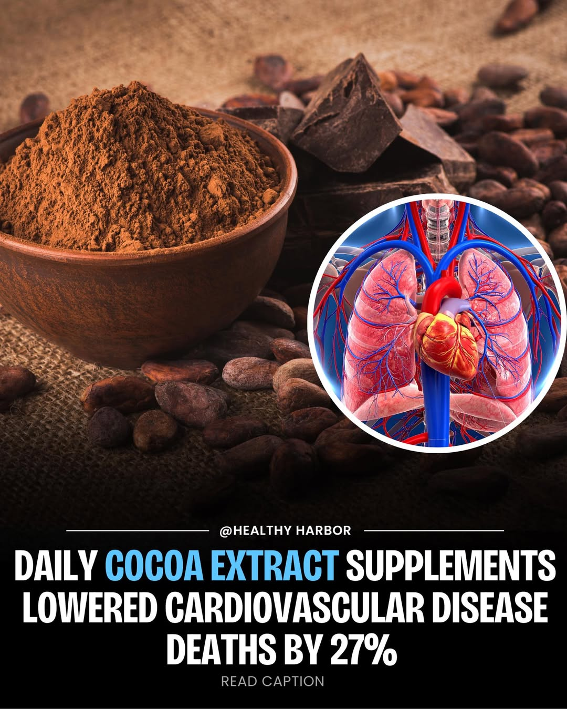
Louis shares a summary of the COSMOS randomized trial of 21,442 older adults taking a 500 mg daily cocoa-extract supplement. It reduced CVD mortality by 27% (HR about 0.73) over 3.6 years as a secondary outcome, without a statistically significant reduction in the primary total CVD events endpoint.

Louis shares Luigi Fontana's summary of a 12-week RCT in 120 people with prediabetes testing 60 g of pistachios daily (30 g before breakfast and dinner). Pistachios lowered HbA1c, post-meal glucose spikes, LDL, triglycerides and waist circumference, while blood pressure, fasting glucose and insulin did not change.

Louis shares a UK Biobank analysis of over 500,000 people showing moderate coffee and caffeine intake associated with lower risk of developing multiple cardiometabolic conditions, plus lower VLDL.
Louis shares a video suggesting chamomile tea improves markers of glycemic control and metabolic health and might protect against thyroid cancer. He adds that it is a pleasant, calming evening drink.

Louis shares a UK Biobank analysis (over 500,000 people, 11 years) in which three cups of coffee daily was associated with 48% lower new-onset cardiometabolic multimorbidity, and 200-300 mg of caffeine with 41% lower. Moderate caffeine was also linked to lower VLDL; this is observational data.

NutritionFacts summarizes PREDIMED, in which over 7,000 high-risk people were randomized and one group received free nuts weekly for four years. The nuts group appeared to cut stroke risk about in half, and higher nut intake overall was linked with lower premature death; walnuts may improve artery relaxation.

The shared summary describes a 12-month RCT of 235 postmenopausal women randomized to no prunes, 50 g or 100 g of prunes per day. The 50 g group lost significantly less hip bone density than controls; 100 g added no benefit and had lower adherence.

A Science Advances study from King's College London found that urolithin A activates the heart-protective protein PKGIα at cysteine 42, improving heart relaxation, fibrosis and exercise activity in mice with HFpEF and relaxing engineered human heart tissue. About half of people produce urolithin A from pomegranate; human trials are lacking, so benefit for patients is unproven.

Louis shares an explanation of how coffee diterpenes suppress CYP7A1 via FXR, reducing LDL clearance, replicated across RCTs and pooled in a meta-analysis.
A video shows Caldwell Esselstyn and family eating guacamole. Louis says many studies show frequent avocado eating lowers heart disease risk and likely increases lifespan, but cites no specific study.
Louis shares a ZOE episode explaining why nuts are linked to lower CVD and diabetes risk. About 30% of the calories in nuts pass through the gut undigested, which helps explain why they cause less weight gain than their calories suggest.
Louis quotes Harvard's Nutrition Source summarizing cohorts and meta-analyses linking regular coffee to lower heart disease and stroke risk, and improved insulin sensitivity and diabetes risk. Decaf showed an association too, suggesting compounds besides caffeine matter. These are observational associations.
Louis argues that, while organic is fine if affordable, eating conventionally grown fruit and vegetables is much better than skipping them. He cites Ames's PNAS papers showing 99.99% by weight of dietary pesticides are plants' own natural defense chemicals, and that natural carcinogens in produce far exceed synthetic residues.
Louis shares a 2026 review of wild blueberries and cardiometabolic health, saying the strongest and most consistent evidence is for improved vascular function.

Gokhan shares two practical swaps for sticking to a Mediterranean diet: low-saturated-fat almond fruit bars and no-salt sprouted bread, which he says lowers his blood pressure. He links earlier group posts on plaque reversal, salt restriction and anti-inflammatory foods, and reshares a do's-and-don'ts guide to the diet.
Louis shares a study where 30 hypercholesterolemic and 15 type 2 diabetic participants ate 250 or 500 g of banana daily for 12 weeks. Fasting glucose and the LDL/HDL ratio improved in the hypercholesterolemic group. He adds that greener bananas have a lower glycemic and insulin index because of resistant starch.

Louis notes that more roasting lowers polyphenols like chlorogenic acid, sharing a post on a Spanish randomized crossover study. In it, lightly roasted, phenolic-rich coffee produced a small improvement in body composition compared with regular roast. Body weight and metabolic syndrome markers did not change.
Louis shares a Dr. William Li video on foods and dietary patterns that affect stem cell number and function, which he says repair damage to aging arteries. He cautions that the science is somewhat oversimplified but the main points are correct.

A European Heart Journal study (2007) from Charite Berlin had 16 healthy postmenopausal women drink black tea, tea with skimmed milk, or water on three days. Flow-mediated dilation improved with plain tea but the benefit disappeared with milk. Rat artery experiments showed tea boosts nitric oxide and milk caseins block it. Louis notes many studies show polyphenols improve FMD.

Louis endorses a summary of nuts and seeds for diabetes but rejects its claim that omega-6 promotes inflammation and insulin resistance. He says over 30 RCTs show no rise in inflammatory markers and over 100 RCTs show improved insulin sensitivity and glycemic control, and that nuts and seeds protect against CVD and diabetes.

A shared piece suggests cocoa's theobromine may balance caffeine's effects and support focus. Not specific to heart health.

Louis says it is a myth that olive oil cannot be used for high-heat cooking: some (light/refined) olive oils have smoke points of 220-230 C, above typical deep-frying temperatures of 350-375 F, and the flavor is almost fully removed so they suit baking. He names the product he uses in an image.
Louis quotes a BMC Medicine study of more than 3,100 TwinsUK adults followed over a decade. Diets rich in tea, coffee, berries, nuts and whole grains were associated with healthier blood pressure and cholesterol and lower CVD risk scores, and urinary polyphenol metabolites showed the same pattern.
Both are high in saturated fat but have different fatty acid profiles, so cocoa butter raises LDL much less than milk fat. Check labels for added milk fat.

Louis explains that raw garlic contains enzymes that produce allicin when crushed, allicin lasts only minutes, and cooking or aged garlic extract provides none, though other beneficial compounds remain.

Gokhan's practical MEDAS tips: morning cucumber-celery juice, evening low-sodium V8 for lycopene, a tablespoon of high-polyphenol olive oil at lunch and dinner, and nuts in place of cheese. He warns that a green juice containing grapefruit juice may interact with statins.
ScienceDaily reports a review of two decades of research on pecans and heart health. Details are limited to the headline.
Louis shares two randomized trials of peanut butter. In 120 older adults at fall risk, 43 g/day for six months improved sit-to-stand speed and muscle power without changing weight; a separate 6-month trial in young adults (ARISTOTLE) found better memory and stress response.
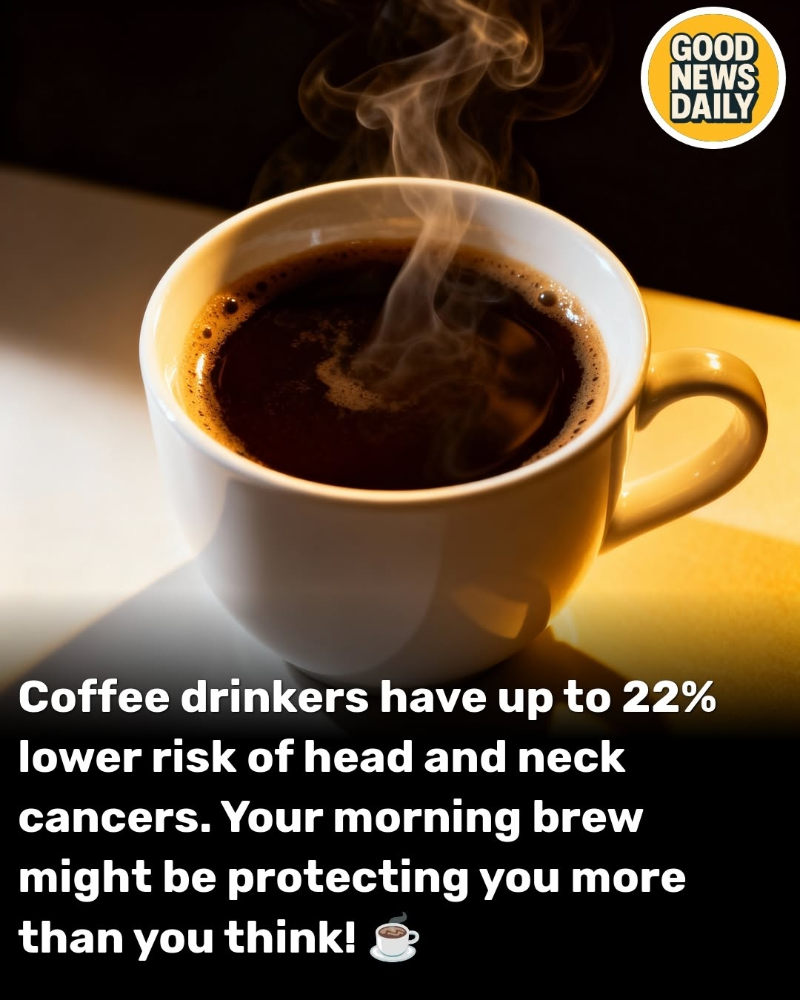
Louis shares a pooled analysis from the INHANCE consortium finding coffee and tea intake linked to lower head and neck cancer, suggesting hot coffee does not raise throat cancer risk. He calls for RCTs of coffee extract.

The poster asks whether anyone has tried eating Brazil nuts to lower LDL and points to a small study suggesting a single large intake improved lipid profile in healthy volunteers. The shared text says four Brazil nuts once a month may improve LDL for up to 30 days, while daily intake risks selenium toxicity.
Louis shares a Physionic video on walnuts and mortality, noting the mortality data are hard to ignore.

Personal anecdote about eating large amounts of roasted sesame seeds as a snack and carb replacement; the admin considers nuts and seeds among the healthiest foods. No evidence cited.
A short post notes that a cocoa extract supplement was found to lower hsCRP. The linked news article describes an investigation from the COSMOS trial in which cocoa flavanols lowered inflammation markers in aging adults.

In a 6-week randomized trial of 79 adults with MASLD, eating 200 g raw tomatoes plus 50 g tomato sauce daily lowered FibroScan liver fat more than a tomato-free diet. Body weight, fat mass, waist and metabolic markers did not differ, suggesting a food effect independent of weight loss. The trial is small and short.

Louis shares Harvard Nutrition Source information that sweet potatoes are roots in the morning glory family, genetically unrelated to white potatoes, which are tubers. Unlike white potatoes, sweet potatoes are not associated with weight gain or diabetes in recent studies, and purple Japanese varieties may be especially healthy.

Gokhan reposts a Harvard Health list. Include tomatoes, olive oil, leafy greens, nuts, fatty fish, berries and other fruit, and coffee; avoid refined carbohydrates, fried foods, sugary drinks, red and processed meat, and margarine, shortening and lard. He adds two daily drinks, plus green tea, hibiscus tea and coffee, to raise his Mediterranean score.

Quoting Harvard's Nutrition Source, the post says an analysis of 20 studies with hundreds of thousands of participants found that one to two 3-ounce servings of fatty fish a week (salmon, herring, mackerel, anchovies, sardines) reduces the risk of dying from heart disease by 36 percent. Fish and fish oil are described as good for the heart and blood vessels.
Louis quotes a post arguing that 500 g/day of added fruit for 2 months did not raise MRI liver fat despite nearly tripled fructose intake, and that fructose harms appear in extreme overfeeding studies with fructose-sweetened drinks. In calorie-matched trials, fructose replacing other carbs did not raise liver fat or ALT.

Louis shares a chart based on the Harvard Nurses' Health Study and Health Professionals Follow-up Study relating coffee, tea and caffeine to dementia, with links to previous posts. The chart image is not described in the text.
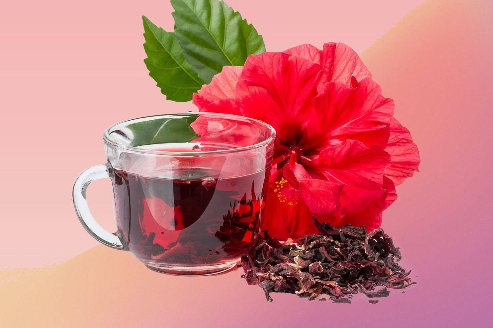
Describes evidence that hibiscus improves blood flow and lowers blood pressure, including an acute human study in which hibiscus extract raised plasma and urinary nitrite/nitrate, suggesting greater nitric oxide production. The author drinks 1-2 mugs daily brewed with green tea.

Louis shares a NutritionFacts summary of a randomized trial where postmenopausal women taking about 1 gram per day of black cumin powder (under a quarter teaspoon) reduced LDL by 27% within two months, significantly better than placebo.
A FoundMyFitness solocast summary says each extra daily cup is associated with a roughly 0.7-1 year younger epigenetic age, that 3+ cups daily links to 34-41% lower odds of accelerated biological aging, and coffee drinkers show up to 27% lower all-cause mortality. Decaf shows similar benefits.
Louis shares Valter Longo's ProLon L-Protein, a plant-based powder designed to limit insulin, mTOR and IGF1 activation, with 25 g of complete protein. He says whey raises insulin more than white bread or glucose, but the best option is simply eating the whole beans and peas. Not an affiliate.
Louis shares a FoundMyFitness episode description saying coffee may reduce epigenetic age by up to one year and that filtered coffee lowers cholesterol risk compared with methods like French press. Other topics include roasts, decaf, MCT powder and timing.
Louis shares a FoundMyFitness post claiming that a low omega-3 index carries mortality risk like smoking and that about 2 g/day of EPA plus DHA raises the index from 4% to 8%. He cautions that the research is primarily observational.
Louis shares UChicago Medicine dietitian advice for non-alcoholic fatty liver disease: three cups of coffee a day, four tablespoons of olive oil a day and a Mediterranean diet. He reminds the group that liver fat is the main cause of insulin resistance for most people. It is clinic guidance, not a trial.
A randomized trial found adding avocado and mango to the diet raised flow-mediated dilation to 6.7% while it fell to 4.6% in controls, with lower diastolic BP and some improvement in eGFR.

Louis notes evidence including randomized trials shows prunes protect against bone loss; the shared summary says 50 g a day preserved hip bone mineral density.

Louis shares a JAHA study summary linking higher coffee intake with better cognitive scores in older people with atrial fibrillation, with a dose-dependent pattern and lower inflammatory markers.
The poster says plant-based eaters who also ate some seafood lived longer than pure vegans in the Adventist Health Study and the Harvard Nurses' and Physicians' follow-up studies. Vegans still did very well, just not as well. The shared text says the Adventist study followed over 100,000 Americans for 30 years.

Louis shares a Frontiers in Nutrition study from Harvard's Wyss Institute suggesting flavonoids such as quercetin stack into supramolecular fibers that stabilize cellular proteins under stress, a possible mechanism beyond antioxidant effects.
A hashtag-only share of the FoundMyFitness coffee and longevity episode, which says coffee may reduce epigenetic age and depends on brewing method.

Louis shares a summary of cocoa flavanol evidence. An updated meta-analysis of 25 RCTs showed modest drops in blood pressure and improved flow-mediated dilation. The COSMOS trial gave 500 mg/day of flavanols to 21,442 older adults for a median 3.6 years, with total CV events down 10% (within chance) and CV deaths down 27%. A 2026 severity-ranked reanalysis favored cocoa.

Louis advises buying small bottles and using EVOO within about 6 weeks of opening, citing a storage study where alpha-tocopherol fell 20% by 2 months and 92% by 12 months.

Louis highlights a Harvard Medical School and Massachusetts General Hospital trial, recruiting healthy men aged 18 to 40, that studies short-term effects of white potato intake on endothelial function and inflammation. It follows observational links between potatoes, hypertension, diabetes and other CVD risk factors.

A shared summary says US average omega-3 index is 4.12% and under 2% of people reach 8%. In a 2,500-person cohort and 42,466-person pooled analysis, highest-index groups had lower all-cause mortality. Louis cautions evidence is observational and high omega-3 intake may raise AFib.

Clinical review of foods and supplements affecting small dense LDL, an independent risk factor. Pistachios, hazelnuts and mixed nuts in a Mediterranean diet consistently improve sdLDL and particle size, and high-polyphenol olive oil (25 mL/day for 3 weeks) cut small LDL particles 15.3%.

Louis states that many studies link coffee with lower risk of cirrhosis and liver cancer and that coffee likely protects the liver. No specific study is cited.
A University of Connecticut meta-analysis of nine studies linked regular kimchi intake to better cardiometabolic markers. The blood pressure benefit is attributed to potassium and fermentation bacteria despite kimchi's high sodium, though most studies were done in Korea.

Louis shares the JAMA prospective cohort study of over 130,000 US adults followed up to 43 years: higher caffeinated coffee and tea intake was associated with lower dementia risk and modestly better cognition, strongest at moderate intake.
A six-month double-blind pilot RCT in 44 older adults with PAD tested a daily flavanol-rich cocoa drink against placebo. The cocoa group walked farther 2.5 hours after consumption while placebo declined, with better calf muscle mitochondrial activity, capillary density and perfusion.

Louis recounts that Louis Ignarro won the 1998 Nobel Prize for showing nitric oxide is a signaling molecule that relaxes blood vessels. A shared Ignarro post explains oral bacteria convert vegetable nitrate to nitrite en route to nitric oxide, and that strong antiseptic mouthwash may disrupt this.
Louis flags a news report that the sweetener erythritol may damage the blood-brain barrier. He notes earlier observational work from Stanley Hazen's Cleveland Clinic group linked erythritol to higher stroke risk.

A shared summary of Valtin 2002 finding no source for the 8x8 rule, plus intake data from Irish adults, with Louis noting coffee is not dehydrating.
Louis shares Harvard's Nutrition Source on coffee: regular drinking may lower heart disease, stroke and diabetes risk and improve insulin sensitivity. He links earlier group posts on liver, cognition and aging.

A brief share of an Ornish graphic asserting that evidence for nuts and seeds protecting against heart disease is overwhelming. No study or numbers are given in the text.

Louis shares a Medscape item saying bioactive compounds in coffee reduce the incidence and progression of liver disease.

Louis points to a previous post on a University of Michigan study that scored foods by their effect on healthy life. Per the shared news text, soda costs about 12 minutes per serving while nuts, seeds and some fruit add minutes.
Louis highlights an npj Biofilms and Microbiomes paper showing raw garlic juice and allicin reduce TMAO production via gut microbiota. In people with high TMAO production, a week of raw garlic juice reduced TMAO formation, increased microbial diversity and beneficial bacteria; in mice allicin ameliorated atherosclerosis. He notes cooking destroys allicin.

Reviews how green tea may support heart health, chiefly through improved endothelial function (including a study by Dr. Nikolaos Alexopoulos and colleagues showing rapid improvement). The author drinks green tea brewed with hibiscus every morning and links a fuller blog post.
A review-style explainer on organic versus conventional food. It clarifies that the USDA Organic label certifies farming practices rather than health claims, and that organic farming still permits some pesticides. The core tension is a clear drop in pesticide exposure against more complex evidence for long-term health benefit.

Louis endorses Layne Norton's argument on aspartame metabolism and says diet soda beats regular soda, noting decades of prospective tracking in Harvard cohorts, while preferring neither.
Louis shares a 2023 Frontiers in Nutrition randomized controlled pilot study testing kombucha tea as an anti-hyperglycemic agent in people with diabetes. The report says kombucha significantly lowered fasting blood glucose, but it is a small pilot.
A shared Blue Zones description of the purple sweet potato (imo) that is an Okinawan staple. It is described as high in complex carbs with a low glycemic load that spikes blood sugar less than white potato, and rich in the antioxidant sporamin. The poster calls it healthier than white potatoes.

A shared post explains that choline is needed for phosphatidylcholine, which packages and exports liver fat in lipoproteins. Severely inadequate intake can cause liver fat to accumulate in controlled feeding studies and is reversible with adequate choline. Good sources include eggs, liver, meat, fish and soybeans.

A shared summary of a 2015 UC Davis study of four vitamins across eight produce items found frozen was equal or higher than fresh in vitamin C and E, never lower. Louis recommends frozen produce.
Quotes Terry Wahls on the Nrf2 pathway, said to switch on 250+ genes that raise glutathione, curb NF-kB inflammation and support detoxification, and notes that certain foods and spices can activate it. This is a general mechanistic explainer with no trial data.

The American Heart Association summarizes the DECAF trial: adults treated for AFib who drank at least one cup of coffee daily for 6 months had 39% fewer recurrences than those who abstained. The 200-person trial was published in JAMA, though some people still find caffeine triggers AFib symptoms.

Louis shares Luigi Fontana's summary of a large prospective cohort study in women showing that eating nuts, seeds, corn or seeded fruit did not increase diverticulitis risk, while healthy diet patterns (DASH, Mediterranean-style) were linked to lower risk. He notes his mother with diverticulosis was told to avoid nuts for years. Peripheral to heart health but relevant to nut-eating advice.
A systematic review and meta-analysis of randomized trials (154 articles, 119 unique RCTs) found adding about 120 kcal/day of nuts did not significantly change weight, BMI or waist; body fat fell slightly and lean mass rose. Nuts were associated with small reductions in total cholesterol, LDL and triglycerides, with no significant effect on HDL.

A shared summary of a 2025 Cell Biochemistry & Function mouse study: obese, high-fat-fed mice kept at thermoneutrality received catechin-standardized green tea extract (about 2-5 cups human equivalent) for 12 weeks. It enlarged muscle fibers, raised fatty-acid handling and mitochondrial biogenesis markers, reduced ceramide synthesis enzymes and improved glucose handling.
Louis states coffee protects against fatty liver and appears to lower liver cancer risk, linking a newsletter. No study details are provided.
Louis shares a rebuttal of the claim that bananas in smoothies negate berry polyphenols. Banana polyphenol oxidase can break down some polyphenols such as epicatechins but does not degrade most anthocyanins, the main blueberry polyphenols, so the effect is likely minor.

Medscape reports that coffee's effect on gut motility seems to involve other compounds interacting with microbiota, as caffeine alone did not speed recovery after GI surgery.
Louis states that epidemiological studies link coffee to a 25% lower risk of heart disease and that mechanistic studies suggest the association may be causal, sharing a ZOE video on coffee and health. No specific study is cited.

A Fox News story reports that people with the highest blood xylitol levels had a 57% higher risk of cardiovascular events across 17,700 participants in two cohorts, with xylitol also possibly enhancing platelet clotting. Louis added only a hashtag; this duplicates an earlier xylitol post.
Louis quotes Harvard's Nutrition Source on large cohort studies, including the Adventist, Iowa Women's, Nurses' Health and Physicians' Health studies, which consistently link regular nut intake to lower risk of heart attack, sudden cardiac death and CVD.
A Queen Mary University of London study in Microbial Cell found that caffeine acts via AMPK, the cellular fuel gauge, influencing growth, DNA repair and stress response. It was done in fission yeast, so human relevance is unproven.

An infographic explaining that coffee beans contain chlorogenic acids that help regulate blood sugar, protect blood vessels and act as antioxidants, and that roasting changes how much reaches the cup. Light roast has the highest total polyphenols.
The poster notes this is the third human randomized trial he knows of showing peanut consumption improves brain health or memory. The Maastricht trial found about two daily servings of unsalted, skin-roasted peanuts improved insulin responsiveness in memory-related brain regions after 16 weeks in healthy older adults.

Louis discusses a UK cohort of 188,000 adults where moderate coffee drinkers (about three cups) had roughly 48% lower risk of developing two or more of type 2 diabetes, coronary disease and stroke. He cautions that most coffee research is observational, so the exact optimum is uncertain.

A shared piece argues that iodised salt, which eliminated goitre and raised national IQs, is being displaced by fashionable salts that lack meaningful iodine. Loosely related to heart health via salt choice, mainly a nutrition-adequacy point.

A review of coffee and human aging reports that regular moderate coffee consumption is associated with lower all-cause mortality and fewer cardiovascular, stroke and cancer cases. Coffee and its components (caffeine, chlorogenic acids) appear to support stress adaptation and aging mechanisms.

NutritionFacts shares that walnuts may improve the ability of arteries to relax and open, relevant to heart disease prevention.

A shared summary of the DECAF randomized trial in 200 habitual coffee drinkers with persistent atrial fibrillation or flutter after cardioversion. Those who kept drinking caffeinated coffee had fewer recurrences over 6 months than those who abstained, with no safety concerns, though the result does not justify starting coffee.
Louis shares a video on coffee and cancer, stating that regular coffee drinkers have around 18% lower risk of any cancer and that heavy coffee drinkers have around 50% lower risk of liver or endometrial cancer.
Louis shares a brief report from Cleveland Clinic authors showing that ingesting a typical amount of erythritol, but not glucose, enhanced platelet reactivity and thrombosis potential in healthy volunteers. The authors suggest that erythritol's status as a food additive may need re-evaluation.
Louis notes that oily compounds called diterpenes in unfiltered coffee raise LDL and might increase cancer risk in high amounts, so filtered coffee is probably better. He links a FoundMyFitness video on coffee.
Louis shares a FoundMyFitness claim that people with a high omega-3 index (about 8%) have roughly 5 more years of life expectancy than those with a low index (about 4%) in cohort data from the Framingham Heart Study. It also says very low omega-3 may carry mortality risk similar to smoking and that nearly 90% of Americans fall short of EPA and DHA targets.
Louis, who says there are better sweeteners, shares a quoted explainer that aspartame is not toxic: it is broken down in the gut into phenylalanine, aspartic acid and methanol, with exposures far below normal foods.
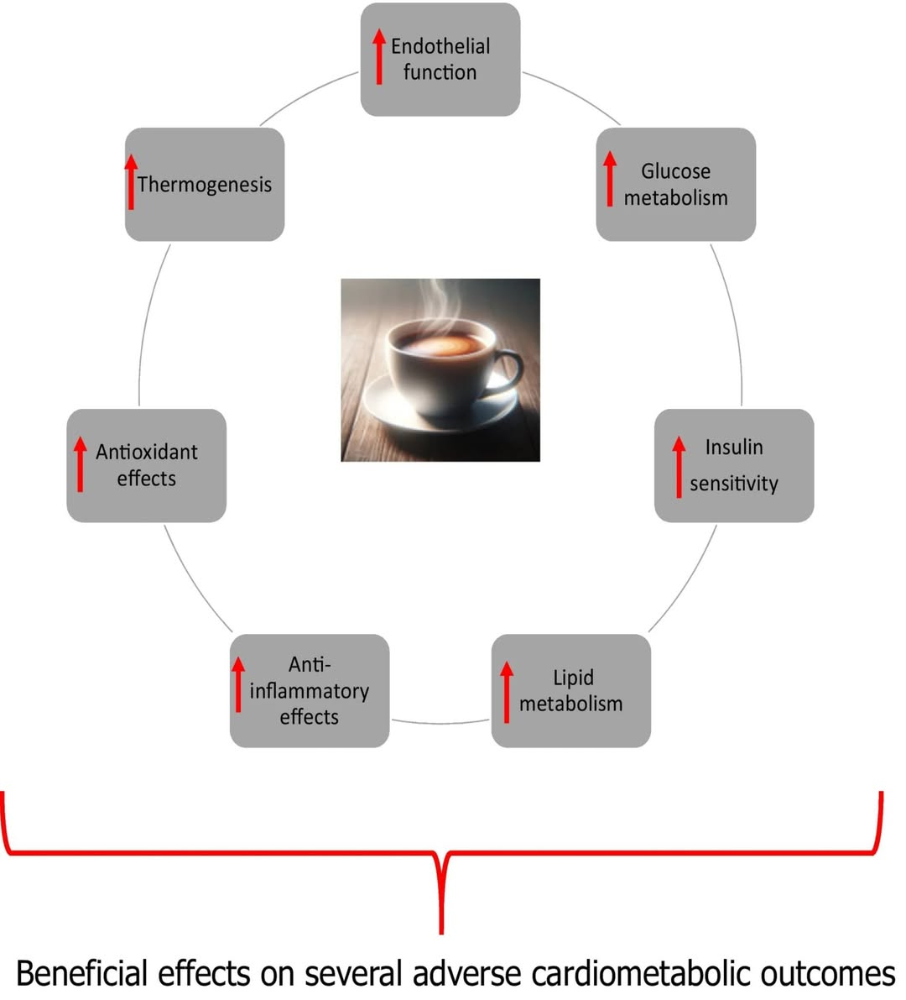
A Spanish-language post summarizes a 2024 review by Ungvari and Kunutsor on cardiometabolic effects of coffee. Moderate intake of 1-3 cups causes only slight, temporary blood pressure rises, with tolerance developing and no long-term hypertension.

A shared piece says a 30 g daily serving of nuts or seeds reduces post-meal glucose peaks, improves insulin sensitivity and lowers LDL, with walnuts having the strongest clinical evidence in type 2 diabetes. No specific studies are cited.

The shared text summarises a Frontiers in Behavioral Neuroscience study finding increased functional connectivity in higher visual and executive control networks after coffee but not caffeine alone. It is a small brain-imaging finding with no direct cardiovascular content.

Louis quotes a Hamburg City Health Study analysis where regular moderate coffee drinkers had thicker cortex and less white matter microstructural alteration, whereas 5 or more cups per day did not differ from under 1 cup. The pattern is U-shaped, and the study is observational.

An Examine.com breakdown of the largest cocoa clinical trial finds cocoa extract may prevent hypertension in people with healthy blood pressure but not those who already have high BP.

Image post listing eight benefits of black coffee, with no detail in the text.

Louis endorses a post stating coffee is associated with lower rates of fatty liver, cirrhosis and liver-related death, and says many hepatologists now tell patients to drink it.
Louis shares a video listing potassium-rich foods that may support healthy blood pressure: white beans, baked potatoes with skin, Swiss chard, cooked spinach and avocado. He adds tomato sauce, tomato juice and sweet potatoes.
A shared summary reports that across studies nut consumption consistently tracked with lower all-cause mortality, with most benefit around 15 g per day and a plateau beyond. Walnuts showed lower mortality in women and men, and the association persisted among people with healthy diets.
ABC reports on a new AHA statement that up to five cups daily is safe for most adults and regular consumption may link to lower risks of stroke, diabetes and heart failure.
A randomized crossover study in 31 healthy adults aged 60-75 found eating 60 g of roasted peanuts daily for 16 weeks improved brain vascular function and memory measures, with about 3% more blood flow to key brain areas.
Louis summarizes the Harvard COSMOS randomized trial: cocoa flavanol supplements showed cognitive benefit, particularly for age-related memory loss, in people whose diets were poor in flavanols at baseline, not in those with normal intake.
Louis dismisses fears about mold toxins in coffee. The shared text says over 95% of tested samples are far below safety limits, roasting removes 70-90% of ochratoxin A and brewing removes more, and regular coffee drinking correlates with benefits.
A podcast excerpt says one cup (150-180 g) of fresh or frozen blueberries daily matches the dose in most positive human studies. The clearest benefit is better endothelial function, with possible memory benefits in at-risk older adults and glucose benefits when metabolism is strained. Randomized trials have not shown they prevent dementia, diabetes, heart attacks or strokes.
A link-only share of a 2022 systematic review and meta-analysis of randomized trials suggesting flaxseed supplementation improves glycemic control variables and insulin resistance in prediabetes and type 2 diabetes, though more trials are needed on dose and method.
Louis shares a roundup of his coffee posts and quotes the Harvard Nutrition Source. Among 83,076 Nurses' Health Study women, 4+ cups daily was linked to 20% lower stroke risk, and in 37,514 women 2-3 cups daily to 21% lower heart disease risk. A 21-study meta-analysis tied about 3 cups daily to 21% lower CVD death. Benefits also cover insulin sensitivity and diabetes.

An infographic explaining that caffeine is absorbed quickly, peaks in blood within 30-60 minutes, and is broken down by liver enzyme CYP1A2, which varies between people and explains different responses to coffee.
Gokhan flags a Guardian report on a US study showing coffee, eggs and white rice, as well as seafood and red meat, were associated with higher PFAS levels, highlighting how widespread the chemicals are.

Louis shares an explainer on endothelial health and nitric oxide. Nitrate-rich vegetables such as beetroot, spinach, arugula and lettuce are converted to nitrite and then nitric oxide, supporting vasodilation. Research on beetroot nitrate shows improved vascular function and in some studies modest blood pressure reductions.
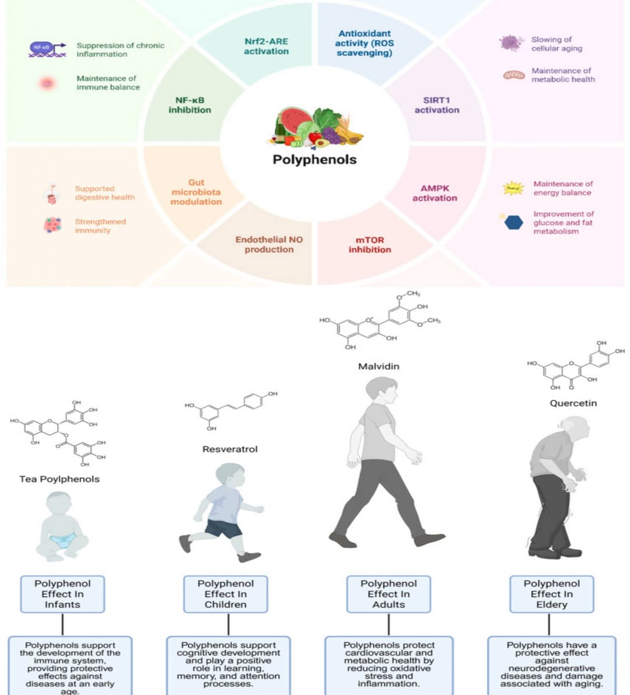
Louis shares a Spanish-language nutrition post stating polyphenols (flavonoids, phenolic acids, stilbenes, lignans) have anti-inflammatory, antidiabetic and other benefits from fetal development to old age, supporting cardiovascular health and blood pressure. It cites no specific studies in the visible text.
Louis shares a clip of Walter Willett discussing what the Nurses' Health Studies and Health Professionals Follow-up Study show about pescatarian compared with vegetarian and vegan diets. The post gives no numbers.
Louis quotes the University of Michigan Nature Food analysis of more than 5,800 American foods by health and environmental impact. Soda and hot dogs subtract healthy life minutes, whereas nuts and seeds add them, and substituting a small share of red and processed meat with whole plant foods and seafood yields gains.
Review of diet-based ways to curb platelet hyperactivity, a driver of thrombosis, CVD, diabetes and cancer. It notes aspirin resistance in 25-30% of people and bleeding risks, and highlights omega-3s, polyphenols, tomato extract (Fruitflow) and kiwifruit as promising natural antiplatelet agents.

Shared summary of a JAMA cohort of 131,821 US nurses and health professionals followed up to 43 years. The highest caffeinated coffee group had 18% lower dementia risk after adjustment, decaf showed no link, and the lowest risk was at about 2-3 cups of coffee or 1-2 cups of tea. Observational, with large confounding (heavy drinkers smoked more).

A shared summary says AHA now finds up to 400 mg caffeine daily safe for most adults, with moderate intake linked to lower risk of heart disease, stroke, heart failure and AFib. The DECAF trial found fewer AFib recurrences in coffee drinkers. Benefit peaks around 3-4 cups.
Shared JAMA summary of the Harvard Nurses' Health Study and Health Professionals Follow-up Study. Moderate intake of caffeinated coffee or tea was associated with lower dementia risk and modestly better cognition, while decaf showed no benefit.
Louis, not promoting sweeteners, shares an umbrella review explaining why cohort studies show worse outcomes but RCTs show weight and glycemic benefits, attributing the gap to confounding and reverse causality.
Louis shares a Harvard Chan article on whether decaf coffee offers the same benefits as caffeinated, concluding probably yes.

Louis shares a report on a small randomized crossover trial in humans, published in Antioxidants, in which daily tomato paste may improve concentration and information processing speed. It is a small study and the post adds no further detail.
Louis, who drinks low-sugar pomegranate juice himself, pushes back on viral claims that pomegranate cuts arterial plaque by 30%. He says the highest-quality trial found no benefit, so it should not replace proven therapies.
Shared summary of the JAMA cohort study following health professionals for an average of 37 years. Moderate caffeinated coffee or tea intake was linked to lower dementia risk and better cognitive performance, with no relationship for decaf.
Louis shares a report that drinking more than three cups of coffee daily was associated with lower liver stiffness (fibrosis) but not with less liver fat accumulation.

Louis shares a news article reporting that eating peanuts daily may boost memory and protect brain power with age. Hashtags point to insulin resistance and arginine as proposed mechanisms. The post itself gives no study details.

A Maastricht University trial in healthy adults aged 60 to 75 gave 60 g of unsalted skin-roasted peanuts daily for 16 weeks. Functional brain imaging showed enhanced insulin responsiveness in memory regions including the hippocampus and parahippocampal gyrus. The shared post says more research is needed.
Louis quotes the AHA statement that up to 400 mg caffeine daily (about five 8-oz coffees) is generally safe for most adults and linked to lower risk of heart failure, heart disease and stroke in some, while higher amounts as in energy shots may raise blood pressure or arrhythmia risk.
Louis relays Steve Horvath's point that in postmenopausal women of the Women's Health Initiative, blood carotenoids (a marker of fruit and vegetable intake) correlated with lower GrimAge more strongly than exercise. Horvath changed his own diet to include more vegetables. The finding is a correlation with an aging clock.

A study presented at ESC Congress 2026 analyzed 17,710 participants from CLSA and EPIC-Norfolk. Highest-quartile xylitol levels were associated with 57% higher MACE risk over six years in CLSA and 18% higher over 30 years in EPIC-Norfolk, with a dose-response pattern. It is observational and cannot show xylitol causes events.

David Perlmutter shares early lab research suggesting espresso compounds prevent tau aggregation.
A FoundMyFitness podcast summary says daily blueberry intake altered the expression of over 600 genes in blood cells and produced anthocyanin-derived metabolites, some associated with better artery dilation. The point is that blueberries do more than act as antioxidants.
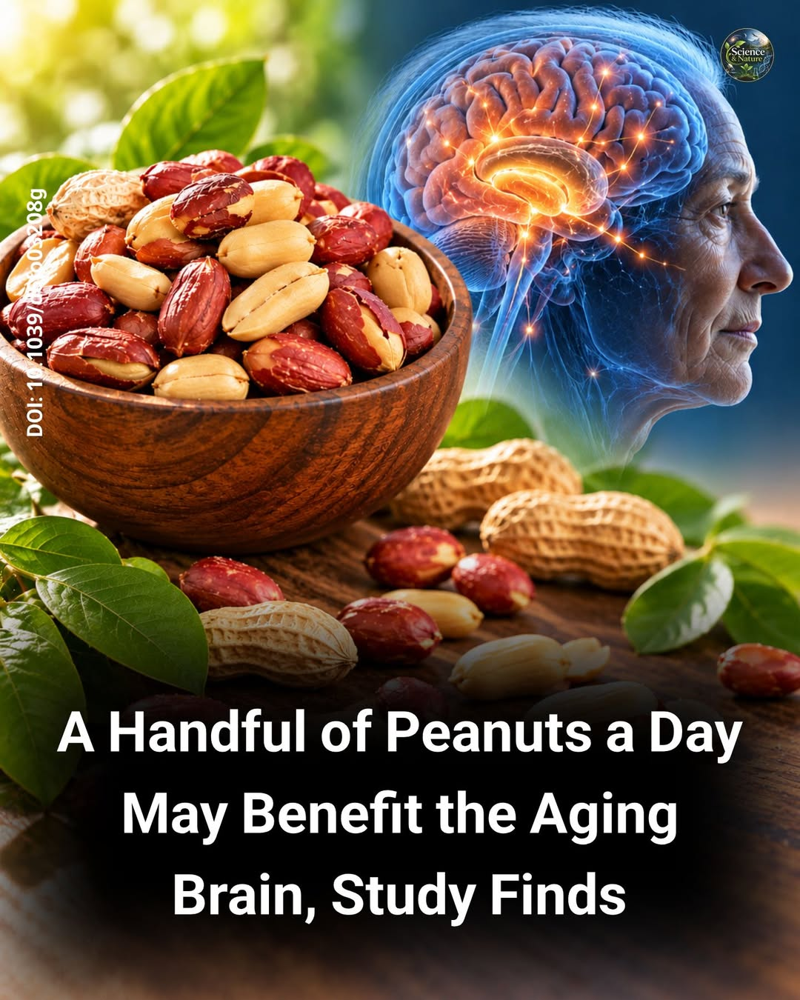
A 16-week trial in healthy adults aged 60-75 gave 60 g of unsalted, skin-roasted peanuts daily and found improved insulin responsiveness in memory-related brain regions on imaging. There were no wider changes in body metabolism or liver fat, and the result helps explain earlier findings of better memory and cerebral blood flow with peanuts.

A shared summary of a study comparing 31 habitual coffee drinkers (3-5 cups/day) with 31 non-drinkers, assessing microbiome, mood and stress, including a two-week abstinence period.
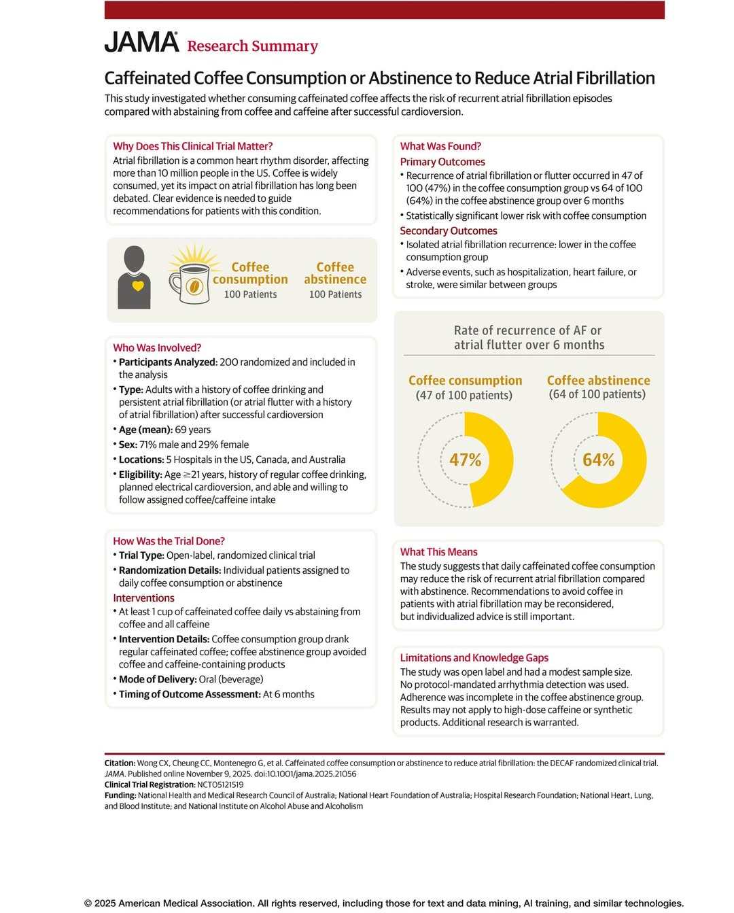
JAMA's research summary reports that adults with atrial fibrillation who drank at least one cup of caffeinated coffee daily after successful cardioversion had lower recurrence than those who abstained. Hospitalization, heart failure and stroke rates were similar.
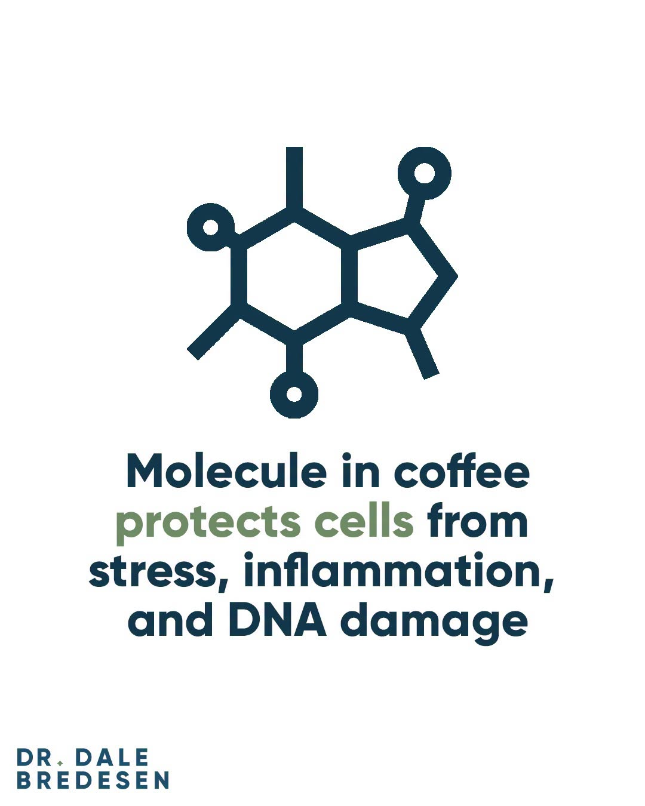
Louis shares a study suggesting caffeic acid, not just chlorogenic acid, may drive coffee's health benefits by activating the stress-protective receptor NR4A1 (Nur77). Caffeic acid is unrelated to caffeine and also found in turmeric, thyme, sage and olive oil.
Louis notes the coffee research is mostly observational but huge, and shares a video quote that 1-3 cups a day is associated with about 30% lower all-cause mortality.
Louis says the totality of evidence suggests plant- and dairy-based fermented foods do not raise stomach cancer risk. Salt preservation does seem to be associated with higher risk, likely from the high sodium content rather than fermentation, and many fermented foods are also salty, which confounds studies.
Quoted video summarizes that women in the Nurses' Health Study eating nuts five or more times weekly scored higher on memory and cognition, about two years younger, and that the PREDIMED Mediterranean diet with mixed nuts improved memory and executive function over four years.
Shared from Harvard Chan: an American Heart Association statement in Circulation says most adults can safely consume up to 400 mg caffeine daily (up to five 8-oz cups of coffee), possibly with cardiovascular benefits. Frank Hu co-authored it as vice chair.
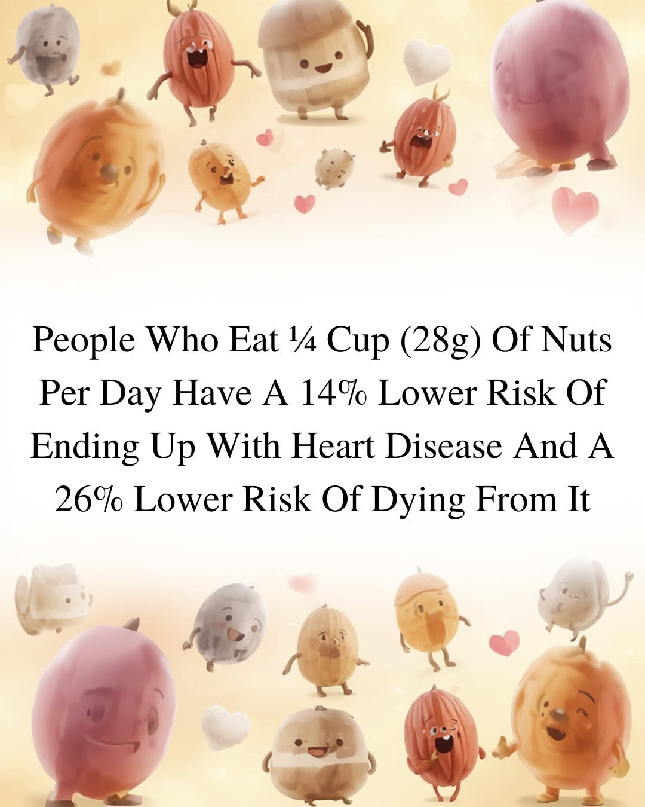
Louis shares a dietitian's recommendation to eat nuts regularly, citing association with better long-term health. No specific data in the post.
Louis clarifies that the 'brain cells' in a Fox News segment about the sweetener erythritol are actually the cells lining brain blood vessels. The shared item is a news clip with little detail of its own.
A shared summary says that in one large study unsweetened caffeinated coffee was linked to a 37% lower risk of Parkinson's disease and a 34% lower risk of Alzheimer's and related dementias. Caffeine blocks adenosine A2A receptors that regulate dopamine signaling in movement circuits. The evidence described is observational, with some animal mechanistic work.
SuppVersity reports a Nutrients 2026 study in which brewed coffee components such as chlorogenic acid and kahweol bound the nuclear receptor NR4A1 as inverse agonists in cell models. NR4A1 is linked to glucose and fat handling and is raised by exercise, suggesting a possible mechanism for coffee's epidemiological benefits. This is cell-model evidence only.

Louis shares a SuppVersity summary of a Journal of Functional Foods review. A meta-analysis found 5 cups a day versus none was associated with a 29% lower type 2 diabetes risk, with each extra cup about 6% lower, and decaf showed a similar benefit to caffeinated coffee. Data beyond 6 cups are murky.
Shared SuppVersity summary of a review describing coffee bioactives acting on AMPK/SIRT1/PGC-1alpha, Nrf2 and mitophagy pathways. Mechanistic and promotional in tone with no human outcome data given.

Louis cites a short video saying evidence suggests coffee lowers liver and endometrial cancer risk, especially liver.
A short video post stating that coffee, tea, nuts, seeds, legumes and leafy greens lower the risk of fatty liver progressing. No study is cited.

Louis shares a dietitian's graphic and notes the result comes from the FERTINUTS randomized trial, which found that nuts improved male fertility. The post contains no numbers or details.
Quoted podcast excerpt: lifelong coffee drinking is associated with slower cognitive decline and lower risk of Parkinson's, Alzheimer's and vascular dementia, possibly because caffeine blocks adenosine receptors and makes the brain work harder.
A shared summary of the AHA scientific statement says coffee links to lower risk of type 2 diabetes, coronary disease, heart failure, stroke and AFib, with greatest benefit at 2-4 cups and up to 5. Tea was also associated with better outcomes; energy drinks and caffeine supplements differ.
Louis quotes a FoundMyFitness episode summary claiming each daily cup is linked to lower liver and endometrial cancer risk and that coffee may reduce DNA double-strand breaks. Three PMIDs are listed but the post itself does not describe those studies.